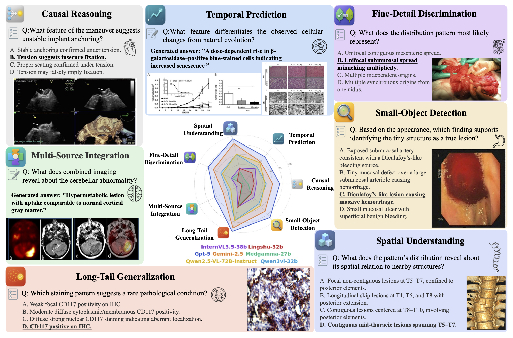
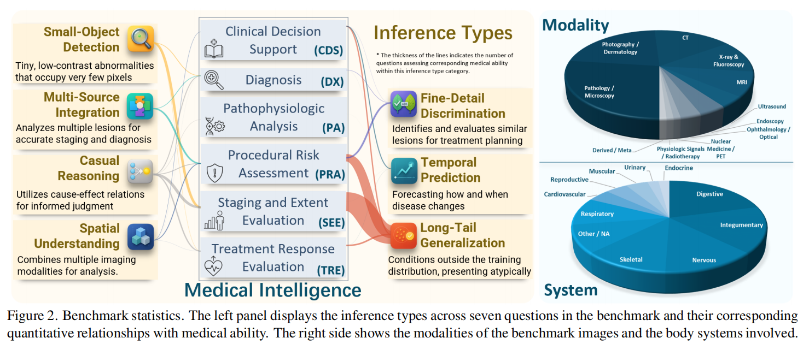
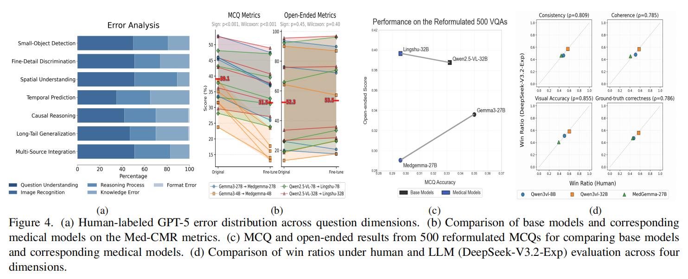

What is Med-CMR?
Med-CMR is a fine-grained benchmark for medical complex multimodal reasoning. It was designed to move beyond perception-level medical VQA and to diagnose what current medical MLLMs can and cannot do when visual evidence, clinical logic, and task structure interact.
Read the Med-CMR paper →
The 7 reasoning dimensions
Perception-oriented dimensions
- Small-Object Detection
- Fine-Detail Discrimination
- Spatial Understanding
Reasoning-oriented dimensions
- Temporal Prediction
- Causal Reasoning
- Long-Tail Generalization
- Multi-Source Integration
Coverage across abilities, modalities, and systems
The left side of the benchmark statistics figure organizes the benchmark around seven inference types and their relationship to medical ability. The right side shows that the benchmark spans diverse imaging modalities and body systems, making it broad enough to support both diagnostic reasoning and stress testing across heterogeneous medical contexts.
This diversity is exactly why Med-CMR works as the backbone of MedReason: it offers wide public coverage before the challenge adds targeted domain shifts on top.

What the Med-CMR findings suggest
Recognition, reasoning, and medical knowledge dominate the error profile
Across dimensions, the main sources of failure are image recognition errors, reasoning errors, and insufficient specialized medical knowledge. Question understanding and output format issues are comparatively rare.
Different dimensions expose different limitations
Visually demanding dimensions are still dominated by recognition-related failures, while many reasoning errors come from the inability to connect evidence across views, time, and clinical context.
Fine-tuning does not help in a uniform way
Compared with their base models, medically fine-tuned models often decline on MCQ tasks, while the gap narrows on open-ended questions and sometimes reverses in favor of medical models. The detailed analysis in the Med-CMR paper explains the major error patterns and likely causes for both task formats.

Med-CMR paper
@article{gong2025medcmr,
title={Med-CMR: A Fine-Grained Benchmark Integrating Visual Evidence and Clinical Logic for Medical Complex Multimodal Reasoning},
author={Gong, Haozhen and Ji, Xiaozhong and Liu, Yuansen and Wu, Wenbin and Yan, Xiaoxiao and Liu, Jingjing and Wu, Kai and Pan, Jiazhen and Jian, Bailiang and Zhang, Jiangning and Hu, Xiaobin and Li, Hongwei Bran},
journal={arXiv preprint arXiv:2512.00818},
year={2025},
doi={10.48550/arXiv.2512.00818}
}